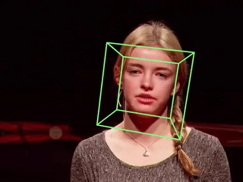
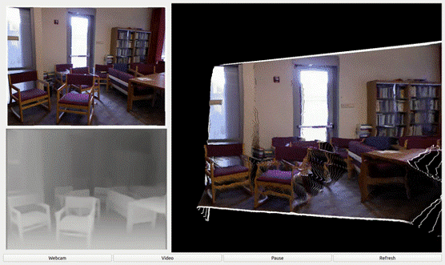
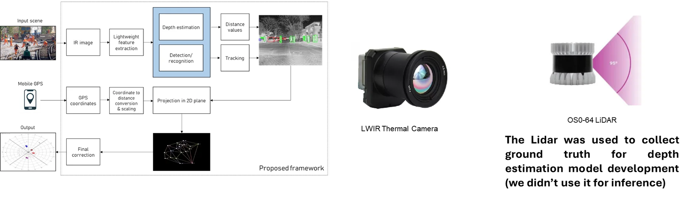
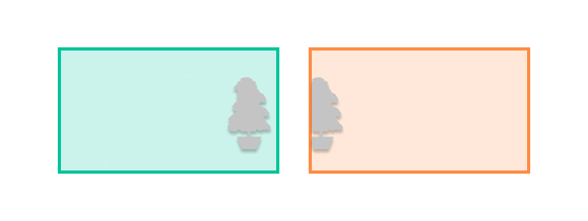
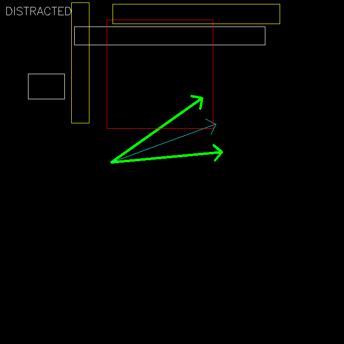

Selected Work
Smart In-cabin Monitoring System
December 2023 – July 2026
End-to-end in-cabin monitoring system built on a single NIR fisheye camera, compliant with Euro NCAP standards, and complemented with proprietary advanced features.
Integrates up to eight deep learning computer vision models (object detection, image classification,
2D/3D body keypoints, facial landmarks, gaze estimation) into a C/C++ pipeline deployed on
System-on-Chip devices (Texas Instruments SK-TDA4VM/TDA4AEN, Samsung Exynos V920). As Team Lead, owned the
technical roadmap, task allocation, milestone tracking, and client demonstrations.
8 models
14 FPS aggregate
4 PoCs
2 vendors
Demo confidential under client NDA — figures above are approved for public disclosure.
C/C++
Python
Edge AI

Head Pose Estimation
September 2025 – July 2026
Real-time head pose estimation pipeline using classical computer vision (PnP solver, ZYX Euler angles).
Recovers full rotation matrix and translation vector for pitch, yaw, and roll from monocular images,
driven by a custom 2D facial-landmark model and stabilized with an Extended Kalman Filter to smooth
motion and handle occlusion.
Read case study →
Python
C/C++
OpenCV

Real-time PseudoLiDAR
March 2023 – November 2023
Camera-based LiDAR replacement using absolute depth estimation and camera calibration
to generate pseudo point clouds from image pixels. Rendered in real-time 3D using OpenGL and Open3D.
Designed a lightweight YOLOv8-based encoder-decoder depth model with accuracy
competitive against SOTA methods (NeWCRFs, PixelFormer) at a fraction of the parameter count.
Read case study →
Python
PyTorch
OpenGL
Open3D
OpenCV

Worker Localization at the Railroad
September 2022 – March 2023
Detect and estimate worker positions using a single thermal (Boson LWIR) camera.
Combined YOLOv5 object detection with NeWCRFs monocular depth estimation.
As the first developer on the project, built the full calibration pipeline:
camera calibration, data collection, and Camera-LiDAR calibration using an Ouster OS0 LiDAR.
The resulting dataset and depth model were submitted as Team DepthSquad to CVPRW 2023's Second Monocular
Depth Estimation Challenge — 1 of 8 submissions worldwide (out of 28 total) accepted for outperforming
the SOTA baseline, beating it on image-based accuracy metrics (MAE, RMSE, AbsRel).
Read case study →
Python
C++
MATLAB
ROS
Thermal Imaging

Real-time Multiple Camera Stitching
June 2022 – September 2022
Proof-of-concept multi-camera real-time stitching system for ADAS, built as sole end-to-end developer.
Implemented two stitching algorithms (simple and advanced) covering input streaming,
cache-parameter registration, and panorama composition.
Requires ≥ 30% FoV IoU overlap between each camera pair for reliable feature matching.
Read case study →
Python
PyTorch
OpenCV
ADAS

Gaze Estimation: Phone Distraction Detector
Personal Project
Detects whether a driver is looking at their phone by combining an object detection model
with a gaze estimation model. Uses a cone-based FOV intersection algorithm with configurable
confidence and count thresholds. The underlying intersection geometry has since been generalized
into a standalone toolkit (linked).
Read case study →
Computer Vision
Gaze Estimation
Object Detection
Taillight Matching & Pairing
September 2018 – August 2020
Official implementation of the stereo-vision nighttime vehicle-to-vehicle positioning algorithm from
my MDPI publication: gradient-boosted stereo matching for taillight-region correspondence, paired with
a neural-network-based matching stage to associate left/right taillights under urban traffic conditions.
See publication →
Python
Stereo Vision
Automotive
Tools & Utilities
State Estimation Simulations
Personal Project · Ongoing since August 2026
From-scratch simulations spanning the recursive-vs-batch spectrum of state estimation on the
SO(3)/SE(3) manifolds: IMU integration/pre-integration, point-cloud pose tracking (EKF vs.
Invariant EKF vs. batch Gauss-Newton), pose-graph optimization with loop closure, and full bundle
adjustment (joint camera-pose + landmark refinement, Umeyama-aligned to ground truth). Every method
implemented twice — hand-rolled NumPy Lie-algebra math, and via the manif Lie-theory library —
backed by a structured set of theory notes spanning math foundations, the Kalman-filter family, and
the factor-graph/smoothing family.
Python
NumPy
SLAM
Bundle Adjustment
Vision Encoder Playground
Personal Project
A curated collection of pre-trained vision encoders (backbones) from various detection
and classification models, ready to use as feature extractors for downstream tasks such as
classification, detection, keypoint estimation, segmentation, and depth estimation.
Python
PyTorch
Hugging Face
YOLO & Calibration Utilities
Personal Project · Ongoing since 2022
A growing personal toolkit reused across multiple detection and calibration projects: fisheye
camera calibration and undistortion, chessboard corner detection, YOLO↔Pascal VOC label conversion,
and video frame extraction for dataset preparation.
Python
OpenCV
Camera Calibration
YOLO
Camera Calibration Tool
Personal Project
A Python/OpenCV toolkit for estimating camera intrinsics and removing lens distortion, supporting
both fisheye and pinhole models across RGB and thermal sensors. Handles checkerboard detection
from live streams or batch images, with configurable quality thresholds and reprojection-error
reporting.
Python
OpenCV
Camera Calibration
My Kaggle Notebooks
Personal Project
A collection of PyTorch, TensorFlow, and R tutorial notebooks plus CSC321 (Univ. of Toronto)
coursework, covering model building and training, transfer learning, RNNs/LSTMs, autograd,
and deploying models via a REST API.
PyTorch
TensorFlow
R
Tutorials
FaceMask
Personal Project
A face detection and blurring tool for video files. C++ backend (FFMPEG + inference) with
a C# WinForms UI supporting drag-and-drop input.
C++
C#
OpenCV
FFMPEG
LiDAR-based Ego Lane Detection
Personal Project
A five-step pipeline for detecting ego-vehicle lanes from LiDAR point clouds: ground point
extraction, intensity histogram peak detection, sliding-window lane search, and polynomial
curve fitting to output left/right lane coefficients.
Python
Open3D
LiDAR
Notch-based Pointcloud Registration
Personal Project
A C++ point cloud registration solution that aligns and merges multiple 3D point clouds to a
master reference via notch region detection and correspondence matching, through preprocessing,
detection, registration, and merging stages.
C++
PCL
OpenCV
Eigen
Minesweeper
Personal Project
A C# reimplementation of the classic Minesweeper game — a fun exercise in GUI programming and game logic.
C#

 Hugging Face
Hugging Face Coursera
Coursera Kaggle
Kaggle HackerRank
HackerRank LeetCode
LeetCode